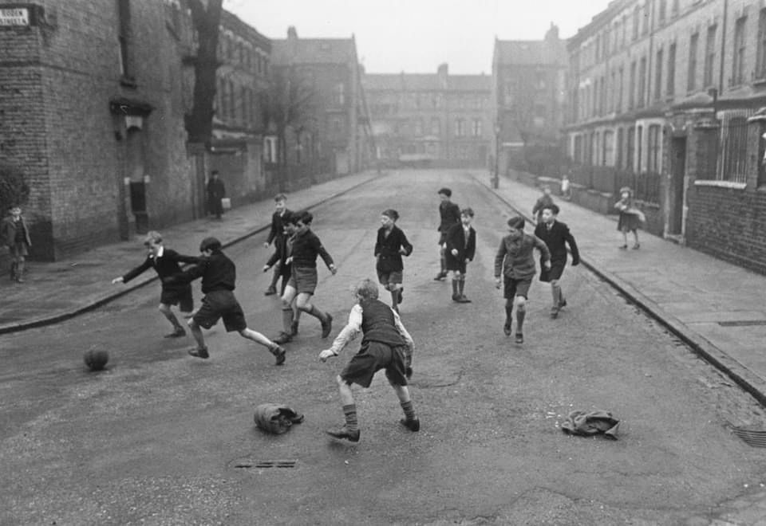

Введение
Мяч одинаковый. Занятия разные.
Один мальчик бьёт по мячу во дворе, пока не позовут ужинать. Другой — на поле академии в 16:30 по расписанию, с датчиком на груди и тренером, который записывает каждое касание.
Первый играет. Второй уже работает, хотя до первой зарплаты ему лет восемь.